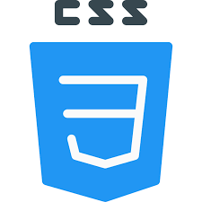
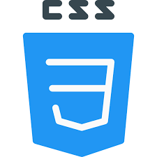
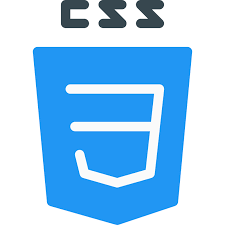
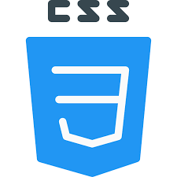

/* inicio
mis proyectos
acerca de mí
contáctame */
Red Social para la comunidad amante de las plantas.
Página creada para mostrar y filtrar datos del estudio de animación japonés "Ghibli".
 



 
